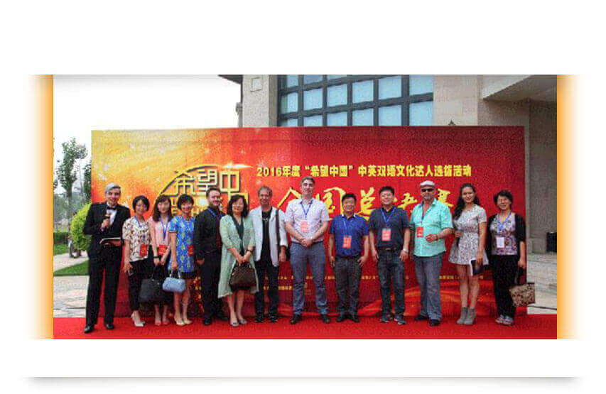
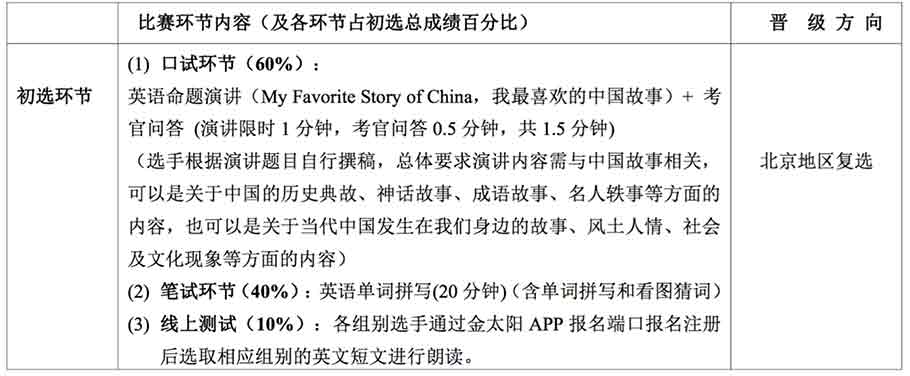
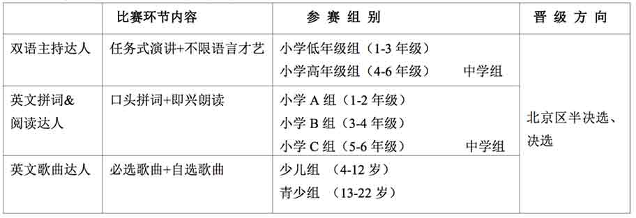

随着《中国学生发展核心素养》的正式发布，立足于贯彻教育部提出的立德树人基本精神，全方位培育全面发展的社会主义创新人才的宏观视野，学生的人文素养、审美情趣和身心品格培育与提升，尤其是青少年语言能力、学习能力、思辨能力、沟通能力、文化意识及国际视野的培养已成为我国文化发展和教育改革的重要目标。
为了激励广大青少年学生树立正确的世界观和人生观，培养具有中国文化血统以及国际文化视野的跨文化交流的多元化人才，展现当代青少年学生积极向上的精神风貌，“希望中国”中英双语文化达人选拔活动作为央视“希望之星”英语风采大赛的并行比赛，自2010年开赛以来，吸引了来自北京、四川、浙江、陕西、青海、贵州、山东、安徽、 河南、甘肃、江苏等近二十个省级赛区以及香港特别行政区推选出来的优秀选手，大家汇聚北京，在全国总决赛现场多样多姿多彩地展示理想志向、人生信念、道德追求、创新智慧、和谐沟通、语言知识与技能的综合素养。两大赛事将以“ 中国文化世界表达”为主题，旨在进一步增强学生中国文化精神的主体意识，促进中国优秀传统文化的传承与传播，扩大中国文化的世界影响，着力塑造具备全方面核心素养的优秀国际化人才。
2017年度 “希望中国”中英双语文化达人选拔活动将继续为广大热爱英语学习的青少年学生提供广阔的学习与交流平台。通过这项影响广泛的英语文化活动，引导教师加强语言教育的育人功能，坚持英语课程人文性和工具性的统一，发展学生的审美品格和思维能力，使学生通过活动选拔过程开阔视野，丰富生活经历，形成跨文化意识，增强爱国主义精神，发展创新能力，形成良好的品格和正确的人生观与价值观，为学生的终身发展奠定基础。
一、组织机构
中视希望之星国际教育交流中心
中视思达奥科教育咨询(北京)有限公司
“希望中国”戏剧教育戏剧研究院
全国基础外语教育研究培训中心
中国教育学会外语教学专业委员会
方直科技
二、活动宗旨
“我向世界表达中国！” “寻找中国文化交流的代言人！”三、活动主题
"I Believe Shine!"“我是最闪亮的！”
---"英语拼读达人”Super English Reader!"
"英文歌曲达人Super English Singer!"
---"双语主持（演讲）达人Super Host/Hostess(Public Speaker)!"
"英文戏剧达人Super English Drama!"
四、“希望中国”中英双语文化选拔活动安排和参选报名办法
（一）安排：2017年四月上旬
（二）复选安排：2017年四月末
注:组委会收到选手报名表后 1-2 周内发放初选通知书,初选环节(3)线上测试请扫下列二维码
（三）参赛报名办法和相关说明
1. 选拔活动分地区选拔阶段(各省、市级赛区选拔活动)和全国总决选两个阶段;
2. 北京赛区选拔活动报名截止时间:2017年3月17日;
3. 北京赛区初选由口试、笔试和线上测试(同步学APP内完成)三部分组成;
4. 凡喜爱英语的中国籍公民均可报名参加大赛,参赛选手可选择性报名参加相应比赛,并按照个人实际情况报名参加相应项目和组别选拔,严禁跨组别报名;
5. 选手可通过所在学校填写报名表集体报名参赛,也可以个人持学生卡或身份证/户口本到北京赛区组委会办理报名手续,还可以通过官方微信报名参加个人赛。
6. 报名参选选手通过初选晋级复选后每人须交纳 200 元考务费(参加多个单项比 赛,不必重复交费), 并可获赠活动组委会统一指定的价值 100 元的大赛《教程》。
7. 已报名参加 2017 年度希望之星”英语风采大赛并成功晋级完成初赛的选手报名参加上述任何一项比赛均免收初、复选考务费;
8. 晋级北京市半决选、决选的选手将参加多环节和的淘汰制比赛,针对相关赛制,组委会将实施封闭式集中比赛,并由组委会统一收取一定的食宿管理费等相关费用。
五、大赛晋级规则及奖项设置
1.“希望中国”中英双语文化达人选拔活动各组别设金、银、一、二、三等和优秀奖,并授予获奖证书。 金、银奖和一等奖选手将晋级 2017 年 7 月“希望中国”中英双语文化达人选拔活动全国总决选;
2.“希望中国”中英双语文化达人选拔活动单项达人优秀获奖选手将晋级 2017 年 7 月“希望中国”中 英双语文化达人选拔活动全国总决选。其中英语歌曲优秀获奖还将有机会代表北京赛区参加 2017 年 7 月 CCTV“希望之星”英语歌曲大赛全国总决赛。
六、大赛组委会地址和联系方式
联系电话:4006-506-909,68403106/07/08/09
大赛微信平台:Outlook-BJ
官方 QQ 群:366601125
官方微博:http://weibo.com/bjoutlook
大赛网址邮箱:talent@outlookbj.com; star@outlookbj.com;
通信地址:北京市海淀区西三环北路 21 号久凌大厦北座 301 室/南座 1710 室 邮 编:100089
"希望中国"文化达人扫一扫加入该群 大赛公众微信平台“希望中国”中英双语文化达人选拔活动组委会对上述须知内容及相关赛事活动安排具有最终解释权。